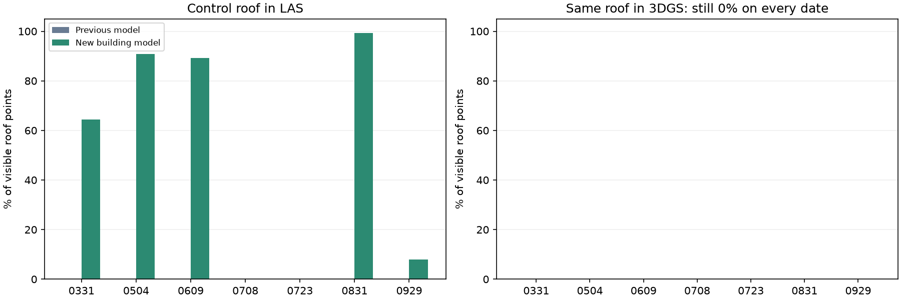
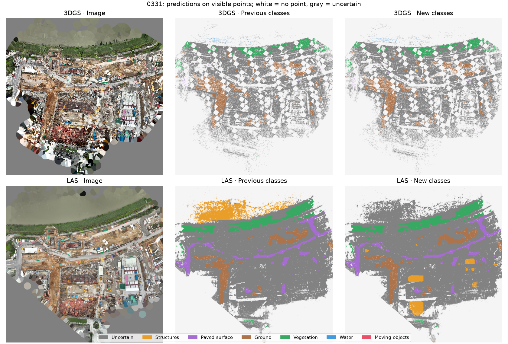
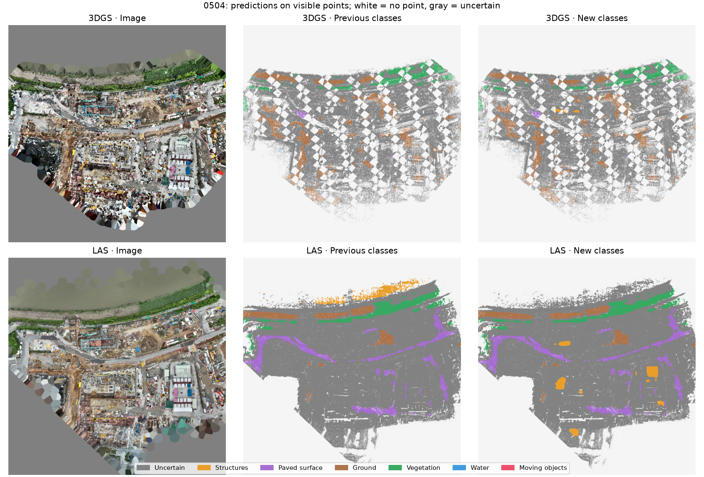
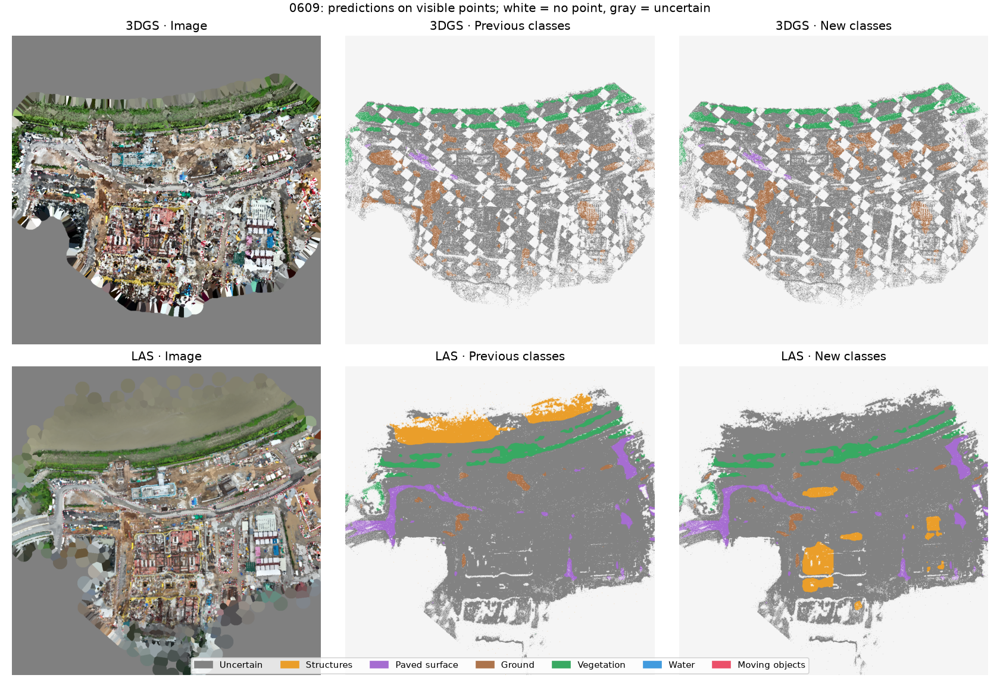
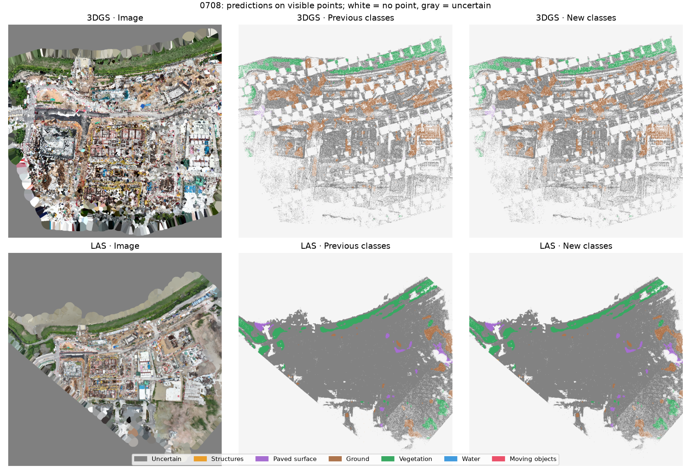
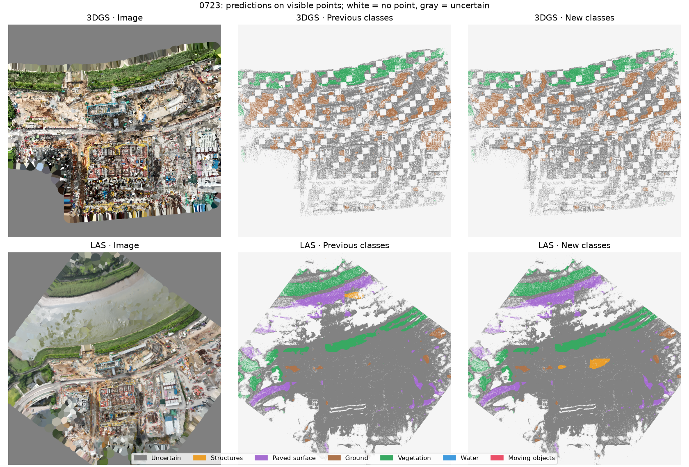
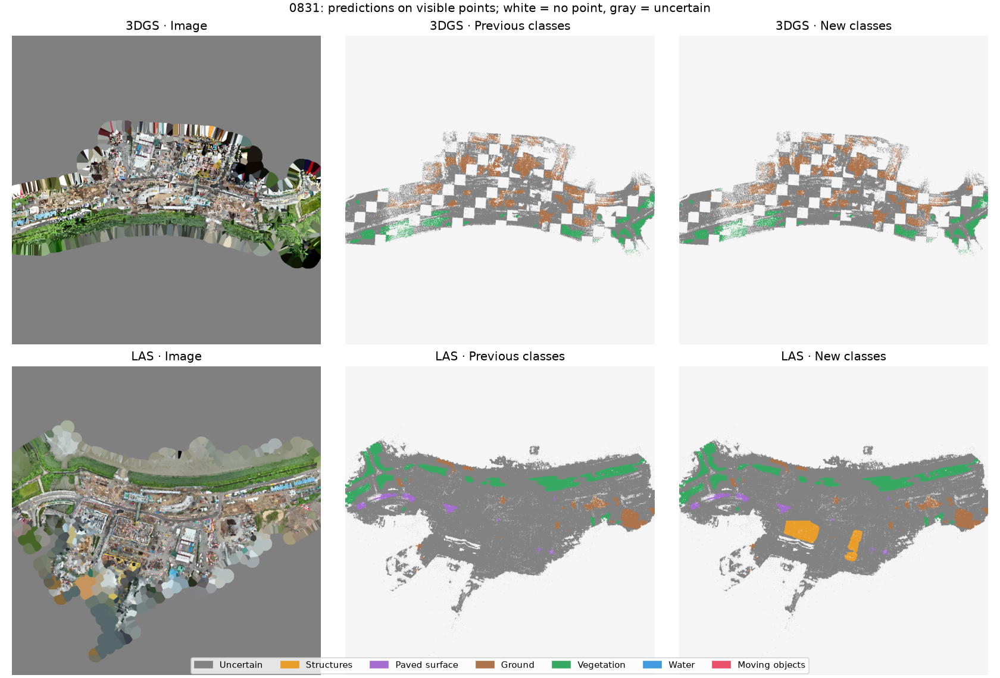
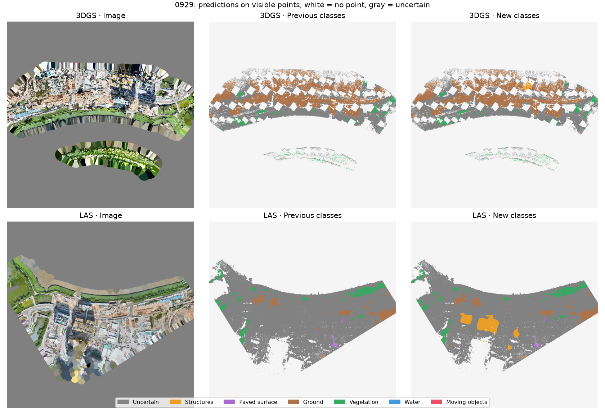

Primary gate: current method 7/7; previous semantics 6/7; previous labels with pair bank 7/7; new variant 7/7.
On 0723, a distant support was lost when choosing between neighboring starts. Their initial pairs are now retained before fitting and pass the existing checks. This correspondence fix is separate from building recognition.
New-variant strict acceptance: 5/7. 0708 and 0723 still fail; 7/7 refers to the primary gate.
Full report · All variants CSV · Recognition CSV · Stable structures · Earlier experiment (archived)
| Date | Current median / P90, m | New median / P90, m | New acceptance | LAS roof: before → after |
|---|---|---|---|---|
| 0331 | 0.272 / 1.148 | 0.272 / 1.148 | yes | 0% → 64.4% |
| 0504 | 0.205 / 0.754 | 0.205 / 0.754 | yes | 0% → 90.8% |
| 0609 | 0.253 / 0.805 | 0.253 / 0.805 | yes | 0% → 89.3% |
| 0708 | 0.255 / 1.006 | 0.255 / 1.006 | yes | 0% → 0.0% |
| 0723 | 0.213 / 0.753 | 0.213 / 0.753 | yes | 0% → 0.0% |
| 0831 | 0.234 / 0.752 | 0.234 / 0.752 | yes | 0% → 99.3% |
| 0929 | 0.219 / 0.742 | 0.219 / 0.742 | yes | 0% → 8.0% |
Distances use identical held-out points. The current combined method remains the default; new semantics has not established an overall accuracy gain.

Recognition improves partially. LoveDA identifies buildings in LAS; the previous model retains other classes. The 3DGS control roof is still missed. Fractions on one roof do not measure whole-model accuracy.






